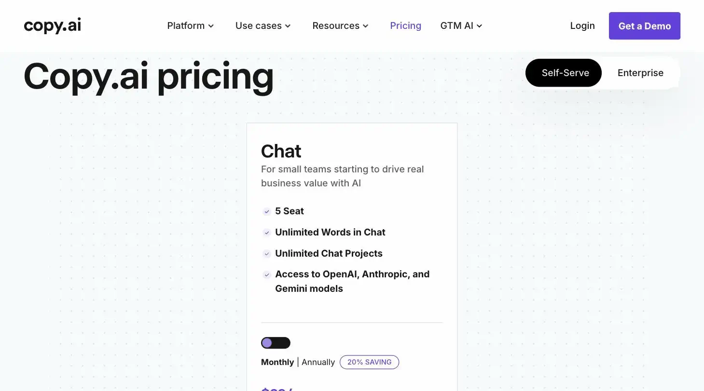

Copy.ai vs. Jasper AI
Copy.ai and Jasper are both AI copywriting tools; Copy.ai starts free (up to $29/month for Chat), while Jasper starts at $59/month. Solos Gems ranks the pair #11 (6.5/10) and recommends Copy.ai for solo use, Jasper only pulls ahead once you need team collaboration and brand-voice control.
Two AI copywriting tools walk into a bar. One writes the joke, the other writes three variations of the joke and asks if you'd like a fourth.
- Value for price6.5/10
- Capability6/10
- Ease of use7/10
- Trial safety7/10

Both tools generate marketing copy, product descriptions, ad copy, email sequences, blog drafts, from prompts or templates. The meaningful difference for a solopreneur is less about output quality and more about how each one prices a single user.
Copy.ai has expanded past content generation into full workflow automation across a go-to-market funnel (shown above). Jasper remains more focused on content and brand-voice generation, so if you need the AI to also trigger downstream actions, Copy.ai covers more ground.
Example from copy.ai. Not independently tested by Solos Gems.Copy.ai pricing breakdown
- Free: 2,000 words/month, 10 chat credits/month (40 bonus in the first month), 200 bonus workflow credits
- Chat: $29/month, or $24/month billed annually; 5 seats, no workflow credits included
- Growth: $1,000/month (annual only), 75 seats, 20,000 workflow credits/month
- Expansion ($2,000/mo) and Scale ($3,000/mo) tiers, plus custom Enterprise, sit above that
The gap between Chat ($29/mo) and Growth ($1,000/mo) is real, there's no mid-tier for a solo operator who outgrows Chat's word/credit limits but doesn't need 75 seats.
Jasper AI pricing breakdown
- Pro: $59/month billed annually, or $69/month monthly; unlimited AI-generated words, 3 brand voices, marketing-focused templates
- Business: custom pricing, typically starting around $900/month for small teams
- No free plan; a 7-day free trial of Pro is available, no credit card required upfront
Copy.ai pros
- Actual usable free tier to test before paying anything
- $29/mo Chat plan is cheap relative to Jasper's floor
- Workflow/automation features beyond straight copywriting
Jasper pros
- Unlimited words on Pro, no monthly word-count anxiety
- Brand voice training is more mature, useful if content needs to sound consistent across a lot of output
- 7-day trial with full Pro access before committing
Who should pick which
If you're a solopreneur testing whether AI copywriting fits your workflow at all, start with Copy.ai's free tier, there's no reason to pay $59-69/month before confirming you'll actually use it. If you later find yourself capped on words or need more polished brand-voice consistency across a high volume of content, Jasper's Pro tier is the natural upgrade, not Copy.ai's $1,000/month Growth plan.
Common questions
Which is cheaper, Copy.ai or Jasper?
Copy.ai, by a wide margin at the entry level. It has a real free tier and a $29/month Chat plan; Jasper has no free plan and starts at $59/month for Pro, roughly double Copy.ai's paid entry point.
Should I start with the free trial or the free tier?
If budget is the main concern, start with Copy.ai's free tier since there's no cost or time limit to worry about. If you specifically want to evaluate Jasper's brand-voice training, its 7-day free trial gives full Pro access without a credit card upfront.
When does Jasper become the better choice?
Once you need real team collaboration or more mature brand-voice consistency across a high volume of content, both areas where Jasper is genuinely stronger, not before then for a one-person operation.